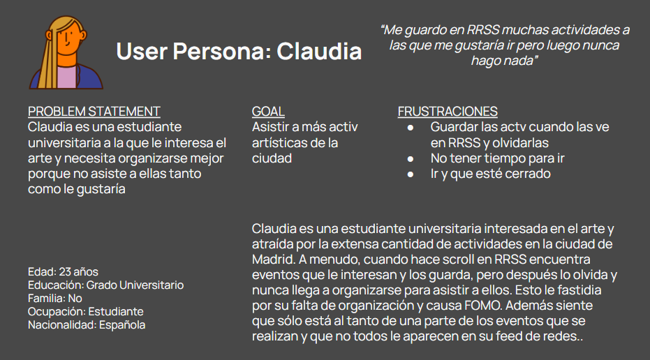
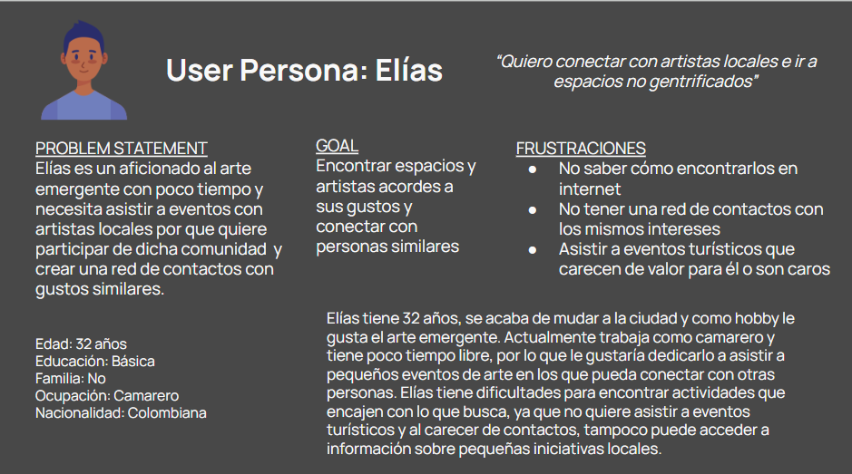
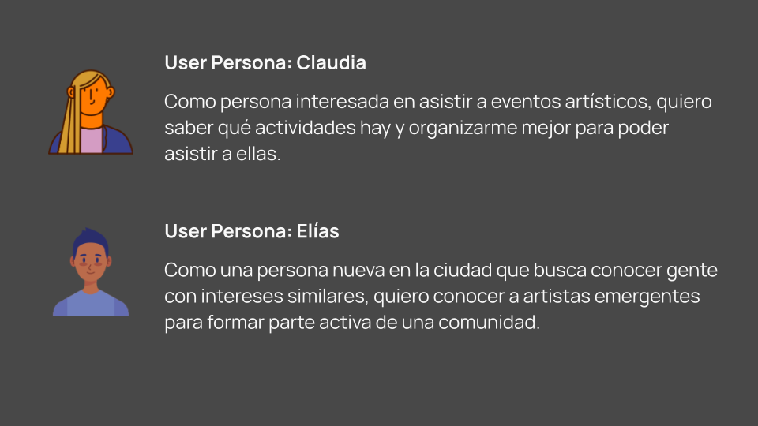
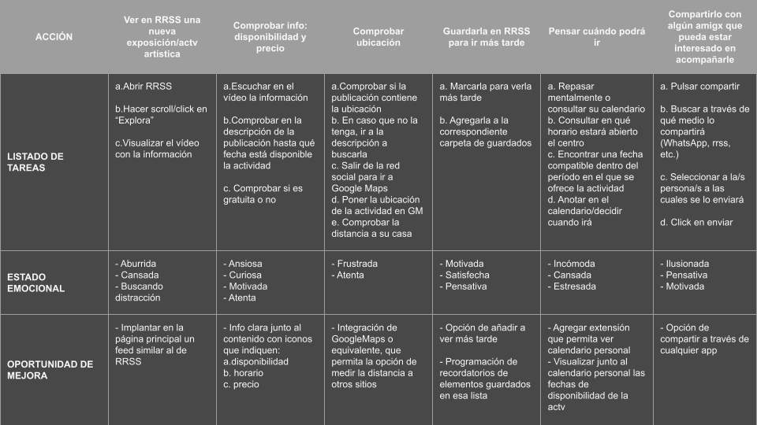
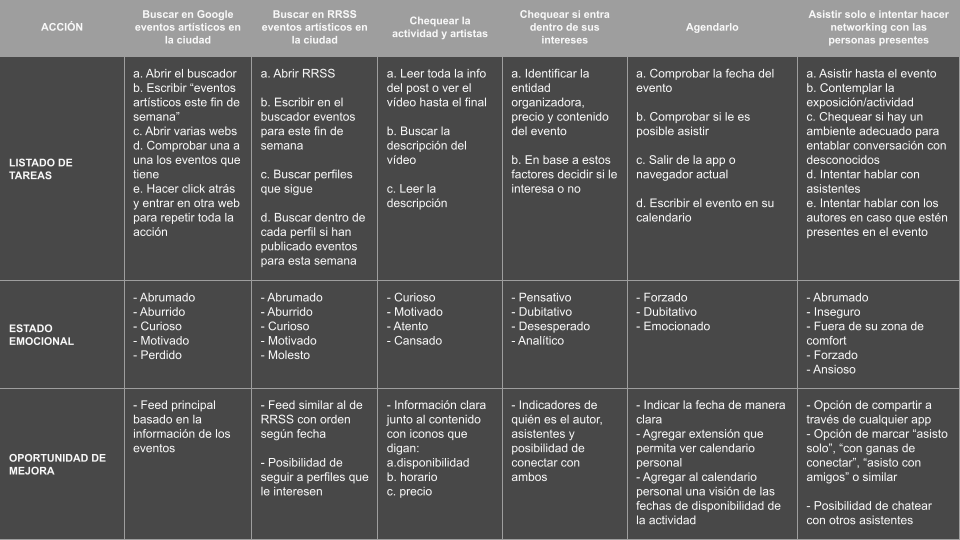

Please rotate your device to landscape mode to enjoy a top-notch experience and resize if needed.
Please rotate your device to landscape mode to enjoy a top-notch experience and resize if needed.
BRIEF:
1. Context:
Major Spanish cities such as Madrid, Barcelona, Valencia, Bilbao, etc., offers a wide variety of artistic and cultural events, but there is an imbalance: overcrowded events with long queues and little visibility for initiatives.
2. Problems to solve:
Users face an excessively long user path when trying to find information about these events:
- Manual search through browsers and social media
- Checking availability, price, location, and schedules individually
- Result: demotivation and lower attendance at events.
3. Objective:
Match activities with users interested in them to increase and decongest attendance at these events.
[001] User Pain Points

1
Manually searching for events on social media/browser and finding outdated and/or disorganized information.
2
Checking one by one whether the event is paid or not.
3
Leaving the search to go to Google Maps to check the location.
4
Not being able to share the link with people who don't have a profile on that social network.

[002] User Personas


[003] User Stories

[004] User Journey

